Counterpart
Publication
An experimental newspaper reflecting on my lived experience of twinhood, exploring the idea of existing as a constituent of a whole. It contemplates the balance between symmetry and duality, where the self is both distinct and deeply linked to another.
I consider also how this dynamic intertwines with a broader narrative: one where twin identity is often misunderstood, oversimplified, and commodified in the media and by the wider world.
Using the newspaper format as a vessel that mirrors the accessibility and misinterpretation of twinhood, Counterpart explores my identity as existing simultaneously revealed and concealed.
Exhibited at the Victorian College of Arts End of Year Exhibition, 2024.
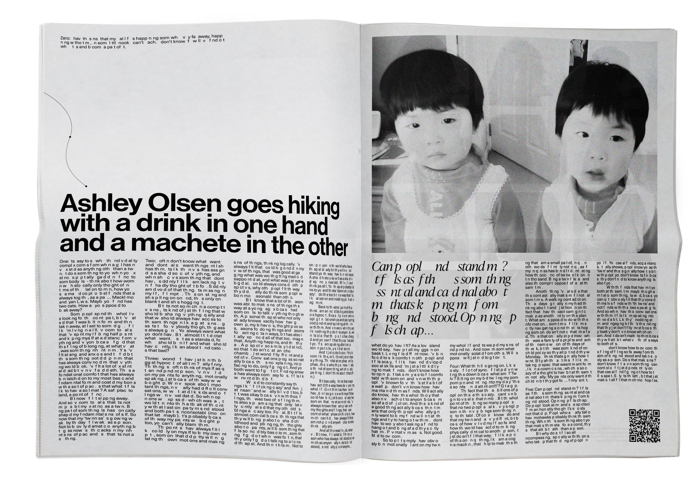
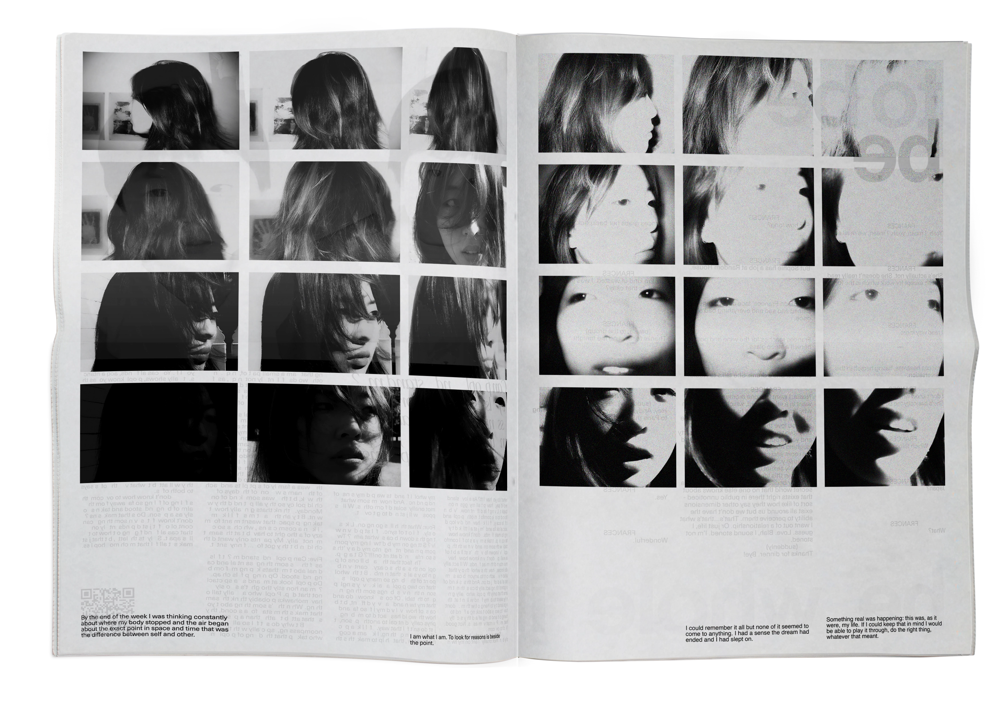
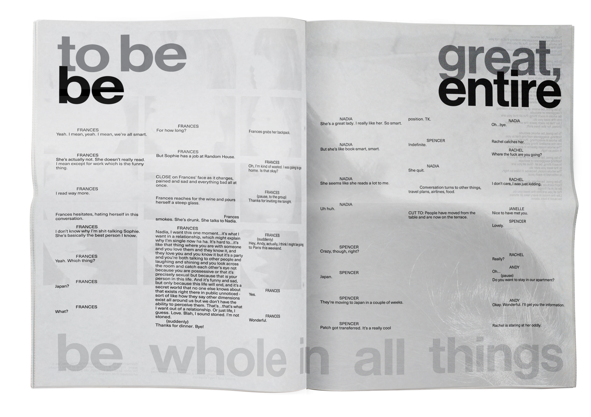
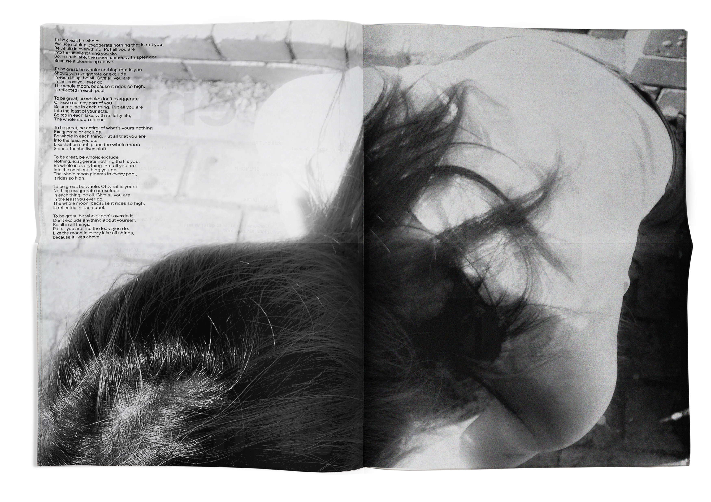
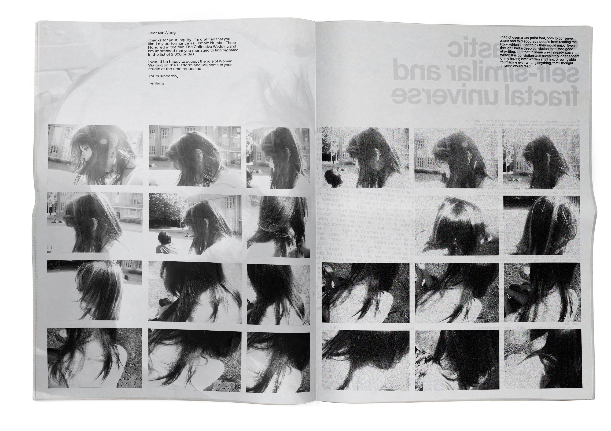
 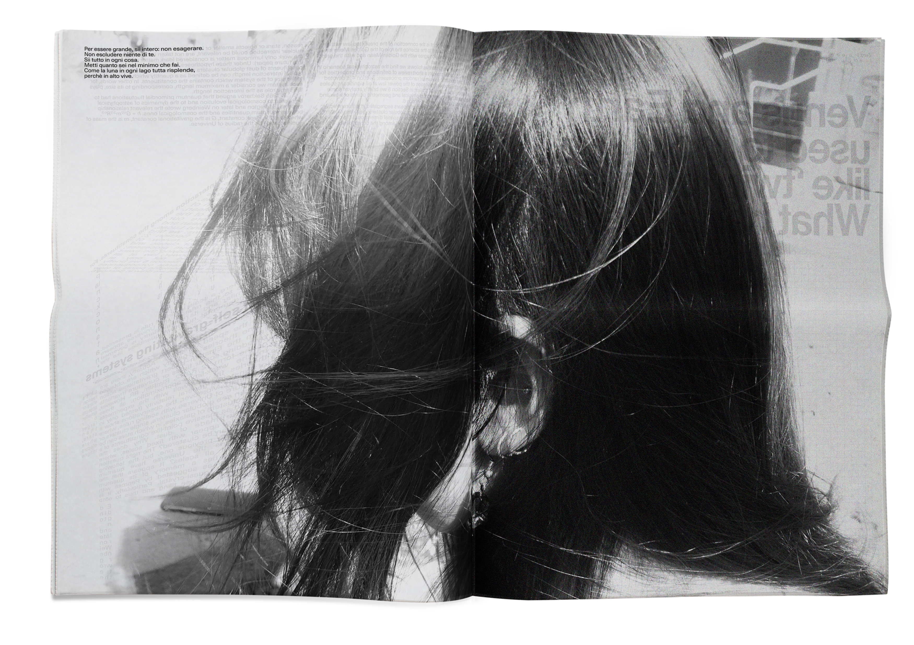
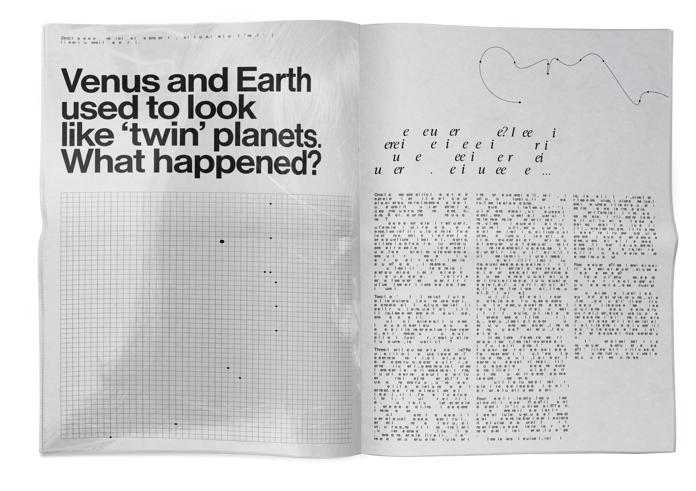
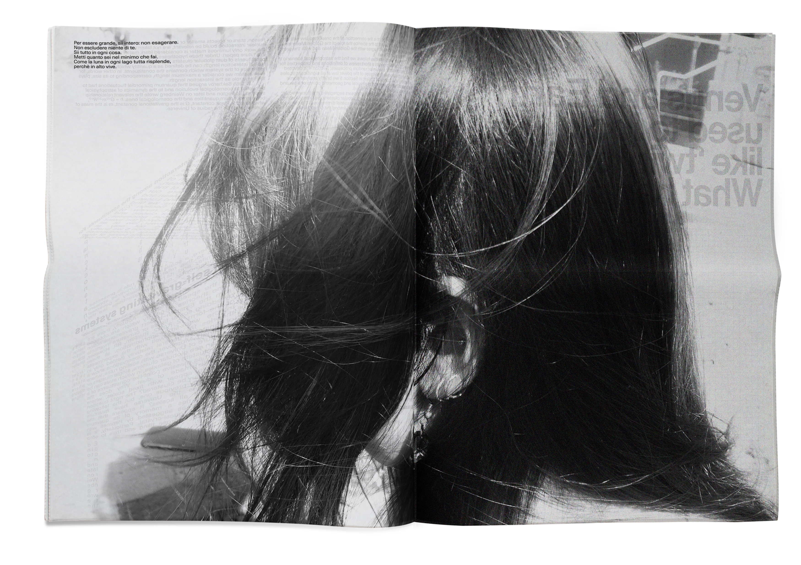
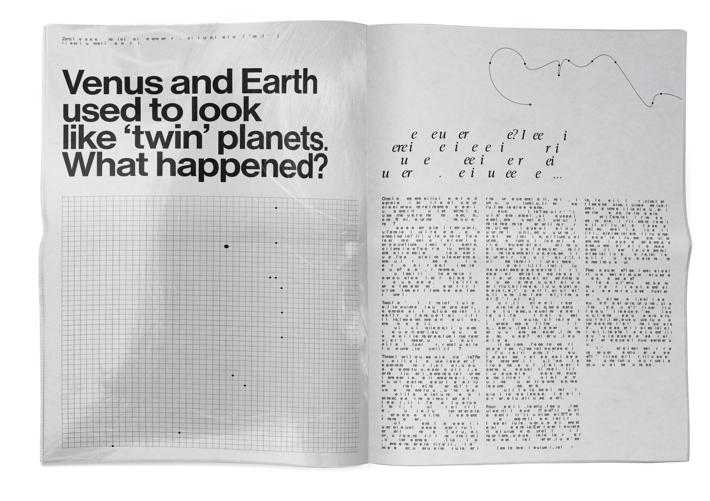
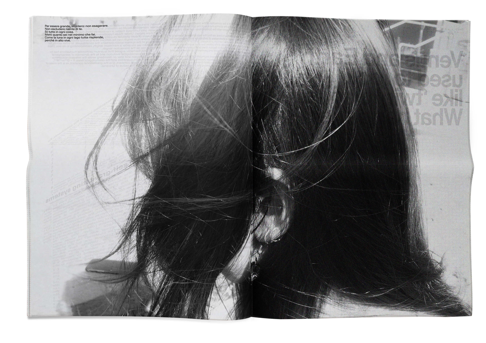
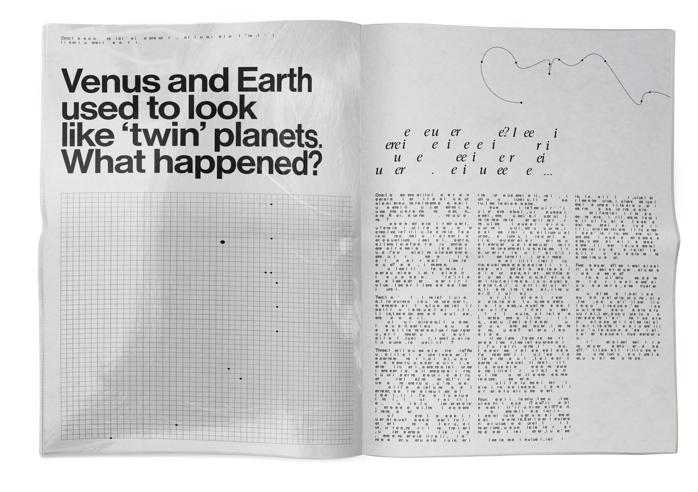